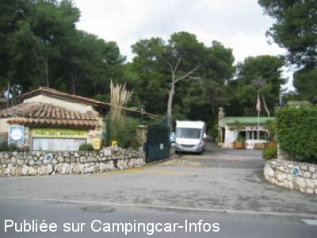

ACS = Aire de services sur camping acceptant le passage pour les services de :
VILLENEUVE LOUBET
(N° 259)
Accès/adresse :
730 Avenue du Docteur Lefebvre
Camping les Maurettes ***
06270 VILLENEUVE LOUBET
Camping les Maurettes ***
06270 VILLENEUVE LOUBET
Latitude : (Nord) 43.63124° Décimaux ou 43° 37′ 52′′
Longitude : (Est) 7.12972° Décimaux ou 7° 7′ 46′′
Tarif : 2015
Stationnement, services : 17 à 29,40 €
Services C-C de passage : 6 €
Type de borne : Artisanale
Services :


Lavage, gonflage des pneus, aspirateur
Douche pour chien
Balnéo
Supermarché à 250 m
Plage à 400 m
Autres informations :
Tel : +33 (0)493 209 191
http://www.parcdesmaurettes.com
Arrêt SNCF à 250 mètres, pour aller à Monaco ou autre
Le 02/03/2011 par LEVOYAGEUR68

Le 10/11/2008 par claudelependu
Le 07/03/2007 par andre-michele.samson
de
Malin
le 27/08/2015 :
Camping propre et bien aménagé mais un peu loin de la plage : vous devrez traversez 2 routes passantes de voitures et passer sous les voies de chemins de fer. La plage pour chiens est plus loin sur la droite, avec en paysage arrière des bâtiments tagués ou en court de démolition.La route est juste derrière avec la voie de chemin de fer.C'est juste pour visiter via les bus et le train.
Camping propre et bien aménagé mais un peu loin de la plage : vous devrez traversez 2 routes passantes de voitures et passer sous les voies de chemins de fer. La plage pour chiens est plus loin sur la droite, avec en paysage arrière des bâtiments tagués ou en court de démolition.La route est juste derrière avec la voie de chemin de fer.C'est juste pour visiter via les bus et le train.
de
lieubo
le 26/10/2014 :
§ Après un séjour d'une semaine au camping : bonnes prestations, personnel disponible et accueillant. A proximité d'une gare et d'arrêt bus pour se rendre a Menton Monaco Nice et aussi Cannes. Un seul petit bémol il serait bon de rajouter l'accès wfee gratuit à l'ensemble des emplacements.
§ Après un séjour d'une semaine au camping : bonnes prestations, personnel disponible et accueillant. A proximité d'une gare et d'arrêt bus pour se rendre a Menton Monaco Nice et aussi Cannes. Un seul petit bémol il serait bon de rajouter l'accès wfee gratuit à l'ensemble des emplacements.
de
Anita Bastrenta
le 23/02/2013 :
Février 2013 : accueil de qualité, aire de services très fonctionnelle ( vidanges, plein, pression des pneus, lavage) Prestations au top : wifi, raccordement Tv sur chaque emplacement, prêt d'un cable TV si l'antenne ne passe pas à cause des arbres, accès à la balnéo compris dans le prix de l'emplacement, bus et gare à proximité pour visiter Nice, Cannes, Menton, Villeneuve Loubet village.Grande surface à 5 minutes à pied. Il est cependant prudent de réserver à certaines périodes : carnaval, fête des citrons, des mimosas, été.
Février 2013 : accueil de qualité, aire de services très fonctionnelle ( vidanges, plein, pression des pneus, lavage) Prestations au top : wifi, raccordement Tv sur chaque emplacement, prêt d'un cable TV si l'antenne ne passe pas à cause des arbres, accès à la balnéo compris dans le prix de l'emplacement, bus et gare à proximité pour visiter Nice, Cannes, Menton, Villeneuve Loubet village.Grande surface à 5 minutes à pied. Il est cependant prudent de réserver à certaines périodes : carnaval, fête des citrons, des mimosas, été.
de
RAUCH m
le 29/11/2011 :
sans pareil accueil, services, fonctionnel, 8 jours sans soucis pour aller à NICE (carnaval) ou à MENTON. La navette à 1 euro devant la porte ou le train à 300 mtres pour la fete des citrons ou MONACO
MOMOdeKB Camping car club de l'est
sans pareil accueil, services, fonctionnel, 8 jours sans soucis pour aller à NICE (carnaval) ou à MENTON. La navette à 1 euro devant la porte ou le train à 300 mtres pour la fete des citrons ou MONACO
MOMOdeKB Camping car club de l'est
de
philippe
le 11/10/2010 :
Accueil agréable, de passage en octobre, 26€ à 3 dont un enfant de 3 ans avec l'électricité à 10 A pour une nuit et un CC de 5m.
Accueil agréable, de passage en octobre, 26€ à 3 dont un enfant de 3 ans avec l'électricité à 10 A pour une nuit et un CC de 5m.
de
claude92
le 10/11/2008 :
De passage fin octobre, camping très propre avec jacuzzi bien placé pour visiter Nice, Antibes, Cannes ou Monaco. A 300mètres de la gare SNCF et des bus. A 2 kms de Marinelande.
De passage fin octobre, camping très propre avec jacuzzi bien placé pour visiter Nice, Antibes, Cannes ou Monaco. A 300mètres de la gare SNCF et des bus. A 2 kms de Marinelande.
de
Parc des Maurettes
le 08/04/2008 :
Bonjour, je suis le responsable du camping Parc des Maurettes.
Quelques petites informations concernant notre aire :
- Tarif de passage = 6 € (toujours gratuit pour nos campeurs)
- Le branchement électrique est envisageable sans supplément le temps d'utilisation du service de vidange (prévoir rallonge)
- L'accès aux sanitaires est possible sur simple demande.
- Un balai-mousse et un tuyau de rinçage sont à disposition (1.20 € pour ~8 minutes).
- Les coordonnées GPS indiquées sont correctes.
Tarif 2008 sous réserve de modification, mais nous ne l'avons pas changé depuis des années.
Merci de votre confiance et bon voyage ! :)
Bonjour, je suis le responsable du camping Parc des Maurettes.
Quelques petites informations concernant notre aire :
- Tarif de passage = 6 € (toujours gratuit pour nos campeurs)
- Le branchement électrique est envisageable sans supplément le temps d'utilisation du service de vidange (prévoir rallonge)
- L'accès aux sanitaires est possible sur simple demande.
- Un balai-mousse et un tuyau de rinçage sont à disposition (1.20 € pour ~8 minutes).
- Les coordonnées GPS indiquées sont correctes.
Tarif 2008 sous réserve de modification, mais nous ne l'avons pas changé depuis des années.
Merci de votre confiance et bon voyage ! :)